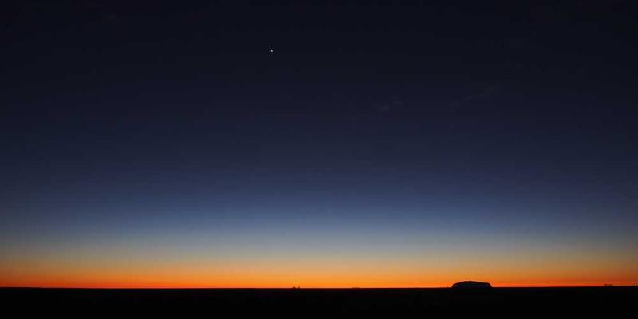

Moath AND Hafsa 8B

The "Bloom Watch App" is designed to help communities, researchers, and policymakers monitor and respond to harmful algal blooms (HABs). By using NASA satellite data and local reporting, the app provides real-time information about water quality and bloom spread.
This tool empowers people to track blooms, get alerts for affected areas, and support public health and environmental safety decisions. The app makes critical information accessible and actionable for both experts and the general public.
With Bloom Watch, users can stay informed and contribute to citizen science efforts, reporting bloom activity and helping build a global monitoring network.
Create a mobile-friendly solution that improves our ability to monitor and respond to harmful algal blooms. The app should combine NASA Earth data with user-friendly tools to track and predict bloom activity.
October 15, 2025
Created by Moath & Hafsa
Contact: Moathmahmoud7086@pristineschool.com
hafsasalman5677@pristineschool.com